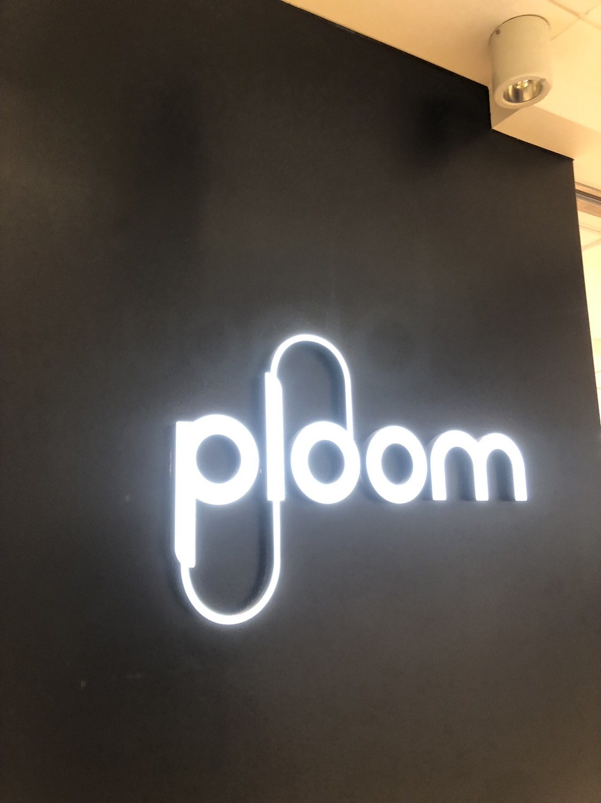

観察課題（看板・サイン）
1、加熱式煙草「Ploom」横浜ポルタ店の看板デザイン（住所;〒220-0001 神奈川県横浜市西区高島2-16-B1 横浜ポルタ内）

撮影日:10月5日
撮影者:佐藤力
横浜かをり山下本町店（〒231-0023 神奈川県横浜市中区山下町７０）

撮影日:10月5日
撮影者:佐藤力
- 「お」を「を」と表記することで昔ながらの洋食レストラン・カフェを感じられる。
- 「restaurant」の周りに蔦が装飾されていて、手入れを怠って看板に巻きついてもレトロ感が出る。
アミューズメント カジノバー~Family Pot YOKOHAMA~（住所〒231-0016 神奈川県横浜市中区真砂町3丁目33 6階

撮影日:10月5日
撮影者:佐藤力
- 真っ黒な背景に金の羽を合わせることでカジノの「一攫千金」のような印象的な看板になる。
- 片方の羽には「Fli towards the world」=「世界へ向かって羽ばたけ」と書いてあり、まだ日本で発展途上のカジノを押し上げようとするスローガンが読み取れる。
- もう片方の羽には店名が書かれていて、店も高みを目指すような意図が読み取れた。